No.ProjectClientWorksYear
Banks
01Gulf Bank, Nuzha branchGulf BankComplete project2001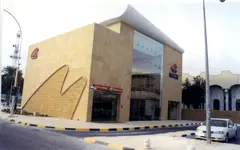
02Gulf Bank, Firdous branchGulf BankComplete project2002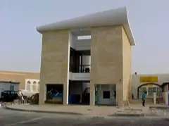
03Gulf Bank, Jabriya branchGulf BankComplete project2003
04CBK, Salwa branchCommercial Bank of KuwaitSkeleton, services & roofing system works2004
05NBK, Sabahiya branch RehabilitationNational Bank of KuwaitInterior2000
06NBK, Faiha branch, RenovationNational Bank of KuwaitCivil works and finishes1999
07Gulf Bank, Hawally branchGulf BankComplete project2002
08NBK, Head Office, Ground Floor RenovationNational Bank of Kuwait—2001
09NBK, Head Office, 2nd & 3rd Floor RenovationNational Bank of Kuwait—2001
10Gulf Bank, Shuwaikh branchGulf BankComplete project2003
11Gulf Bank, Jaber Al-Ahli branchGulf BankComplete project2005
12CBK, Yarmouk branchCommercial Bank of KuwaitComplete project2003
13Gulf Bank, Jahra branchGulf BankComplete project2002
14BKME, South Surra branchBank of Kuwait and Middle EastInternal finishes2005
15Burgan Bank, Adiliya branchBurgan BankArchitectural finishes & MEP works2006
16Gulf Bank, Daiya branchGulf BankServices & internal finishes2004
17ABK, Mansouriya branchAl-Ahli Bank of KuwaitComplete project2004
18Gulf Bank, Jleeb Al-Shuyoukh branchGulf BankComplete project2004
19CBK, Ardiya branchCommercial Bank of KuwaitComplete project2006
20Burgan Bank, Farwaniya branchBurgan BankArchitectural finishes & MEP works2006
21BKME, Ahmadi branchBank of Kuwait & Middle EastComplete project2006
22Boubyan Bank, Sharq branchBoubyan BankRenovation2007
23Gulf Bank, Shaab branchGulf BankComplete project2007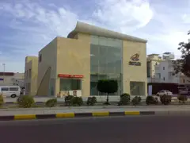
24Gulf Bank, South Surra branchGulf BankComplete project2007
25BKME, Jabriya branchBank of Kuwait & Middle EastComplete project2007
26BKME, Salwa branchBank of Kuwait & Middle EastComplete project2007
27NBK, Tadamon branchNational Bank of KuwaitCivil & architectural2007
28Gulf Bank, Sabah Al-Naser branchGulf BankComplete project2007
29CBK, Jahra Cooperative branchCommercial Bank of KuwaitFinishes, furniture & electro-mechanical works2008
30ABK, Andalus branchAl Ahli Bank of KuwaitComplete project2009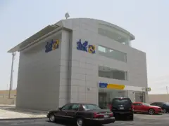
31BKME, Andalus branchBank of Kuwait & Middle EastComplete project2008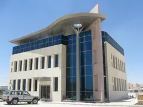
32BKME, Sabahiya branchBank of Kuwait & Middle EastComplete project2008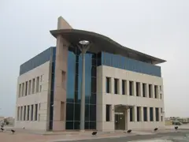
33BKME, Firdous branchBank of Kuwait & Middle EastComplete project2008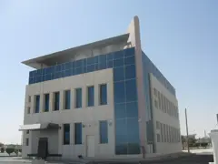
34Boubyan Bank, Abdullah Al MubarakBoubyan BankComplete project2009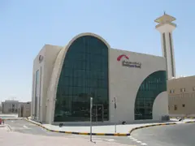
35Boubyan Bank, Andalus branchBoubyan BankComplete project2008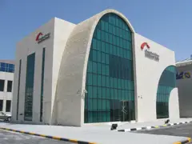
36Gulf Bank, Al Adan branchGulf BankComplete project2009
37Gulf Bank, Bayan branchGulf BankComplete project2009
38Gulf Bank, Dahiyat Abdullah Salem branchGulf BankComplete project2009
39Gulf Bank, Farwaniya branchGulf BankComplete project2009
40Gulf Bank, Sabahiya branchGulf BankComplete project2009
41Gulf Bank, South Surra Zahra branchGulf BankComplete project2009
42Burgan Bank, Firdous branchBurgan BankComplete project2009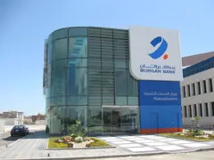
43ABK, South Surra Zarah branchAl-Ahli Bank of KuwaitComplete project2010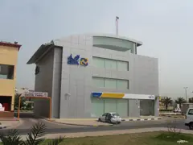
44AUB, Daher branchAhli United BankComplete project2010
45Boubyan Bank, Ahmadi branchBoubyan BankComplete project2010
Retail & stores
01Va Va Voom, Marina MallM.H. Alshaya——
02River Island, Marina MallM.H. Alshaya——
03Koton Shop, Muhalab MallAl-Diij Fashion International——
04The Body ShopMarina Mall, Rumaithiya Cooperative, Daiya Cooperative,Faiha CooperativeBoodai Corporation——
05Limited Too, Marina MallM.H. Alshaya——
06Davidoff, Marina MallM.H. Alshaya——
07BootsMarina Mall, Hawalli Plaza, Al-Faiha ComplexGulf Insurance Company——
08Bear Factory, Kuwait AirportM.H. Alshaya——
09Next, Marina MallM.H. Alshaya——
10Bebe StoreBeidon Trading Company——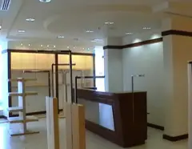
11Beidon Center, Kuwait Magic MallBeidon Trading Company——
12MTC, EtisalatMobile Telecommunications Company——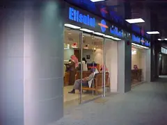
13NMTC Customer Service CenterNational Mobile Telecommunication Company——
14MTC Customer Service Center Booth, Muhalab MallMobile Telecommunications Company——
15Foot LockerMarina Mall, Souk SharqM.H. Alshaya——
16MothercareSouk Sharq, Rumaithiya Cooperative, Daiya Cooperative, Fahaheel, Salmiya, FarwaniyaM.H. Alshaya——
17H & M, SalmiyaM.H. Alshaya——
18Al Qurashi Showroom, Souk SharqAl-Qurashi Company——
19Claire'sMughateer Complex, Salmiya Market, Rumaithiya Cooperative, Daiya Cooperative, Faiha CooperativeM.H. Alshaya——
20Express, The AvenuesM.H. Alshaya——
21Bath & Body Works, Marina MallM.H. Alshaya——
22Office Depot, The AvenuesM.H. Alshaya——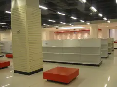
23Pottery Barn Kids, The AvenuesM.H. Alshaya——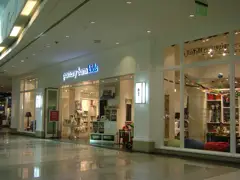
24Victoria's Secret, Marina MallM.H. Alshaya—2012
25Bath & Body WorksM.H. Alshaya—2012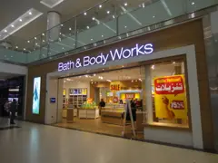
26MAC, Taj Mall, AmmanM.H. Alshaya—2012
27Next, Taj Mall, AmmanM.H. Alshaya—2012
28VaVaVoom, Taj Mall, AmmanM.H. Alshaya—2012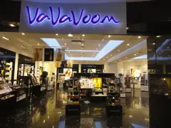
29Victoria's Secret, Taj Mall, AmmanM.H. Alshaya—2012
30IKEA, The AvenuesIKEAArchitectural finishes & MEP works2006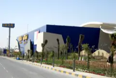
31Debenhams, Kuwait AirportM.H. AlshayaInternal finishes2003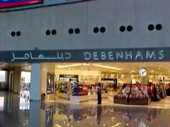
32Debenhams, The AvenuesM.H. AlshayaInternal finishes2006
33Marks & Spencer mall, Interior Finishes BP-1Al-Futtaim Sons / ProjacsInterior1998
Restaurants & cafés
01Costa CaféSalmiya Scientific Center, KAC Main BuildingKASCO—2001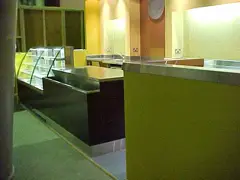
02Asha's Restaurant, Marina Crescent, KuwaitM.H. AlshayaInterior finishes2003
03Al Sarai Restaurant, Al-BidaaM.H. AlshayaRenovation2005
04Gaucho Grill, The Palms, KuwaitM.H. AlshayaInterior finishes works2004
05Burger King Qortuba branchAl-Humaydi FoodComplete project2001
06Starbucks & Pizza, Kuwait Airport DepartureM.H. AlshayaCivil & finishes works2003
07Le Pain Quotidien Restaurant, PalmsM.H. AlshayaComplete project2005
08Totally Fish, Marina CrescentM.H. AlshayaRenovation2005
09Ruby Tuesday RestaurantAl-Emad Real Estate CompanyCivil works2003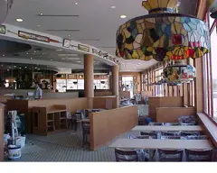
10Asha's Restaurant, Marina Crescent KuwaitM.H. AlshayaInterior finishes2003
11Wasabi Japanese Restaurant, Al-Bidaa—Interior finishes2007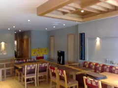
12Black & White Restaurant, KFTZKuwait United Catering & Restaurant Management CompanyInterior finishes2007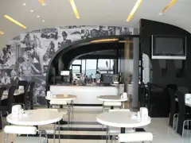
13Starbucks, Kuwait ClubM.H. AlshayaConstruction & finishes2007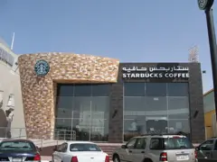
14Shrimpy, The AvenuesM.H. AlshayaInterior finishes2008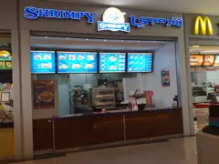
15Juice Bar, The Avenues, Phase IIM.H. AlshayaConstruction & finishes2008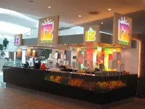
16nolita Pizza, The Avenues, Phase IIM.H. AlshayaConstruction & finishes2008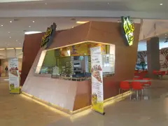
17Dondurma, The Avenues, Phase IIM.H. AlshayaConstruction & finishes2008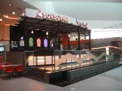
18Santoor, Shanghai, The Avenues, Phase IIM.H. AlshayaConstruction & finishes2008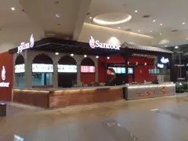
19MEIAS, The Avenues, Phase IIM.H. AlshayaConstruction & finishes2008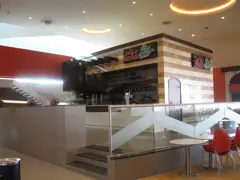
20Shrimpy, AdeliyaM.H. AlshayaInterior finishes2008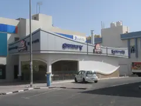
21Starbucks, NuwaiseebM.H. AlshayaConstruction & finishes2008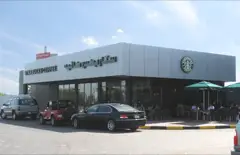
22Butcher Shop, The Avenues Phase IIM.H. AlshayaConstruction & finishes2008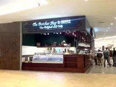
23Al Sanawbar Lebanese Restaurant, SalmiyaAl Sanawbar Lebanese——
24Castania, Al Taj MallCastania——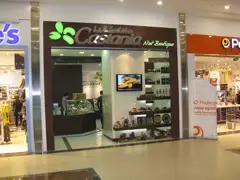
25P.F. Changs, CornicheP.F. Changs——
26P.F. Changs, The AvenuesP.F. Changs——
27Piccadilly Restaurant Building, SalmiyaPiccadilly Restaurant——
28Pinkberry, Marina Mall & The AvenuesPinkberry——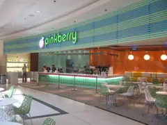
29Pizza Express, JabriyaPizza Express——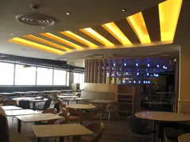
30Point Five Restaurant, Water Front, SalmiyaPoint Five Restaurant——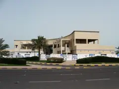
31Point Seven Restaurant, Water Front, Bneid Al GarPoint Seven Restaurant——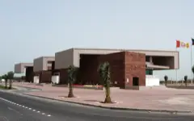
32Starbucks, Taj MallStarbucks——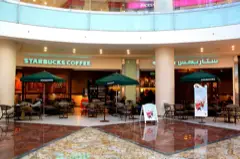
Offices & commercial
01Flex Tower, Bneid Al-GarFlex CompanyCivil works2003
02KGL Building I, II & III, ShuwaikhKuwait Gulf Link and TransportationComplete project2004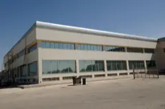
03Al-Zahem & Malhotra Offices and WarehousesAl-Zahem and Malhotra CompanyComplete project2005
04Artistic Production Studios, Al-RaiBoodai CorporationCivil works & architectural finishes2004
05KGL Bus Terminal, ShuwaikhKuwait and Gulf Link TransportationComplete project2006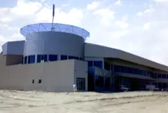
06Sons of Esmail Dashti Company Tower, Kuwait CityAl-Morabton InternationalDesign, permits, construction & maintenance works2006
07Gulf Insurance CompanyGulf Insurance CompanyComplete project2004
08GTE Kuwait, New Facilities, AhmadiGeneral Transportation and Equipment CompanyComplete project2005
09Gulf Insurance Company Additional Two Floors + Service FloorGulf Insurance CompanyComplete project2006
10Schlumberger Renovation of Head Office, ShuwaikhSchlumberger Oilfield ServicesInterior, design & build2002
11New Headquarters for A'ayan Leasing & Investment CompanyA'ayan Leasing & Investment CompanyComplete project2007
12M.H. Alshaya Company Head Office RenovationM.H. AlshayaInterior finishes2008
13Multi Story Building for Car Park Rawda CooperativeAl-Rawda Cooperative SocietyComplete project2008
14Office & Commercial Building Shuwaikh IndustrialUnited Industries CompanyComplete project2007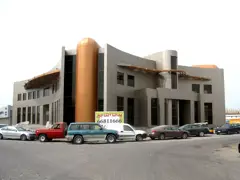
15Amideast, SharqAmerica-Mideast Educational & Training Services, Inc.Internal finishes2010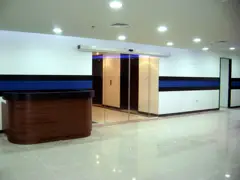
16Gas CollaborationSchlumberger Oil Field ServicesInternal finishes2011
17KIF, Exhibition Centre Hall # 8Kuwait International FairRenovation2010
Co-ops & supermarkets
01Al-Nuzha Cooperative SocietyAl-Nuzha Cooperative SocietyInterior, design & build2000
02Rumaithiya Cooperative Mezzanine Floor Renovation, 2Rumaithiya Cooperative SocietyInterior, design & build2001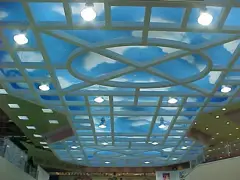
03Sharq Cooperative Society AuditoriumSharq Cooperative SocietyExternal cladding2006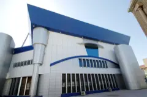
04Al-Quadisiya Cooperative SocietyAl-Bait Al-Ma'mour Trading CompanyInterior, design & build2000
05Surra Cooperative, 2 Deli DepartmentSurra Cooperative SocietyInterior, design & build2001
06Rumaithiya Cooperative Mezzanine Floor Renovation, 1Rumaithiya Cooperative SocietyInterior, design & build2001
07Dean & Deluca, The Avenues Phase IIM.H. AlshayaInterior finishes2008
08Dean & Deluca Stage I (Central Kitchen), The Avenues Phase IIM.H. AlshayaInterior finishes2008
Clinics & hospitals
01Hadi Clinic Redevelopment of 3rd FloorHadi ClinicInterior, design & build2000
02International Clinic, FarwaniyaInternational Health ServicesComplete project2007
03International Clinic, MangafInternational Health ServicesComplete project2007
04International Clinic, JahraInternational Health ServicesComplete project2007
05Al-Maidan Hospital & multi-storey car parkMaidan ClinicInterior finishing, landscaping & infrastructure works2008
06International Hospital Complex, SalmiyaKuwait Medical Services CompanyInternal finishes - package 62009
07ATP Medical Clinic 5th Flr, JabriyaDr. Arwa Al ShaerInterior finishes2011
08ATP Medical Clinic 6th Flr, JabriyaDr. Arwa Al ShaerInterior finishes2011
Hotels & entertainment
01Safir International HotelSafir InternationalInterior finishes for new entrance, new restaurants (Failaka & Iranian)2001
02Renovation & Expansion of Kuwait Regency Palace HotelKuwait Regency Palace HotelRenovation & expansion2006
03Crowne Plaza, Health Club ExtensionAl-Houda Hotels & TourismCivil works2003
04Magic Planet, The Avenues Phase IIM.H. AlshayaInternal finishes2008
Industrial & steel
01Drilco Machine Shop, Mina AbdullahAbdulaziz Abdulmohsin Al-RashedComplete project2003
02ALICO factory, ShuaibaAluminum & Light Industries CompanyComplete project2004
03Modification Works to New Aquafina Plant, SubhanUnited Beverage CompanyCivil & electro-mechanical works2003
04Ahmed Hamsa Factory, ShuaibaMr. Ahmed HamsaComplete project2007
05KN New Development, SulaibiyaKharafi NationalStructural steel works2006
06Fire & Safety Equipment Store and WorkshopKuwait National Petroleum CompanyComplete project2006
07KGL Warehouses, Mina AbdullahKuwait and Gulf Link TransportationNew construction of warehouses with heavy structural steel works2005
08GTE Kuwait, New Facilities, AhmadiGeneral Transportation and Equipment CompanyComplete project2005
09Sanam Glass Factory, Ma'an Development Area, JordanSanam Glass Company, JordanCivil works, design & build2009
10Kuwait National Bottling Company WarehouseKuwait National Bottling CompanyComplete project2000
11Juice Production Factory, SabhanJuice Production——
12Pepsi Cola ExtensionPepsi Cola——
13Kuwait Tower Water ParkAqua ParkSteel structure2002
14Gulf Insurance Company Additional Two Floors + Service FloorGulf Insurance CompanyComplete project2006
15Mercedes Showroom, ShuwaikhZaid Al-Kazemi SonsSteel works and cladding1999
16KFTZ Warehouse RehabilitationNational Real Estate CompanySteel works1998
17Drilco Machine Shop Factory Structural Steel WorksAbdulaziz Abdulmohsin Al-Rashed Sons CompanyComplete project2003
18Artistic Production Studios, Al-Rai Structural Steel WorksBoodai CorporationCivil works & architectural finishes2004
19MW Transmission Station, KabadMinistry of InformationCivil & sanitary works2004
20Data centre, City TowerUnited Cable CompanyFabricate & construction2004
Earthworks & infrastructure
01New Headquarters for A'ayan Leasing Investment CompanyA'ayan Leasing & Investment CompanyExcavation & earthworks2007
02International Clinic, MangafInternational Health ServicesExcavation & earthworks2007
03Office & Commercial Building, ShuwaikhUnited Industries CompanyExcavation & earthworks2007
04A'ayan Space Residential Complex, FintasA'ayan Real Estate CompanyExcavation & earthworks2007
05Point Five, Water Front, SalmiyaSultan Al-Jazira CompanyExcavation & earthworks2009
06Juice Factory, SabhanNational Canned Food Prod, & Trad. Co. (DANIAH)Excavation & earthworks2008
07Dana & Zorba Restaurant, SalmiyaKuwait United Catering CompanyExcavation & earthworks2007
08Piccadilly Restaurant Building, SalmiyaAl-Tamathul Trading & Real Estate CompanyExcavation & earthworks2008
09Renovation & Expansion of kuwait Regency Palace HotelKuwait Regency Palace HotelExcavation & earthworks2008
10Sanam Glass Factory, Ma'an Development Area, JordanSanam Glass Co. - JordanExcavation & earthworks2009
11Swimming Pool Complex, SulaibikhatSulaibikhat ComplexExcavation & earthworks—
12School playing fields—Infrastructure works—